Shading
In this lab you will learn the basic shading techniques to get color on your objects, apply basic textures, as well as a get basic overview of what the different types of materials are and what they do. Let's begin! :D
First, download the initial boring, grey scene
Shaders
Surfaces materials are mathematical models that represent the interaction between an object's surface and the incident light to calculate an the way the geometry looks when rendered. Each shader is mathematically different, but for the purposes of this class you don't need to know about those differences. However, if you are interested, you can always look it up on google.
Lambert
Lamberts are the most basic material type and they are used by default for each object in Maya (you may have already noticed the default lambert shader in your attribute editor). They are used to simulate flat, dull materials like skin, unfinished wood, rubber, or anything that is not shiny. The most important attributes to play with in Lambert are the color and the diffuse, which represents how well light spreads across the surface. The first image below shows a Lambert shader with 0.8 diffuse level. The second image shoes a Lambert shader with a 0.5 diffuse level.
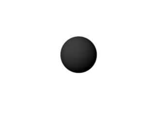
Blinn, Phongs, and Phong Es
These materials make up the "shiny" materials. Anything with any sort of highlight will likely fall under one of these types. Metal objects, glass, smooth plastics, or pretty much anything with any sort of a glossy surface all look good as either a Blinn or a Phong. The exact difference between these is how the model works internally, choosing between them for any given object is really just a matter of taste. The sliders in the specular shading section of the attribute editor are the most important for fine tuning the look of these types of materials. Note that Blinns and Phongs still have the same common attributes like color, diffuse, and transparency that Lamberts do.
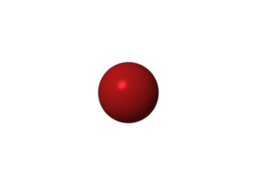 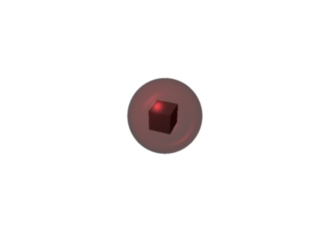
Anisotropic
Anisotropics are weird materials where the specular (highlight) is asymmetric. That is, you can force the shader to be shinier in the U direction than in the V. This is useful for objects that are made of brushed metals and such. Again the specular shading section contains the sliders of interest.
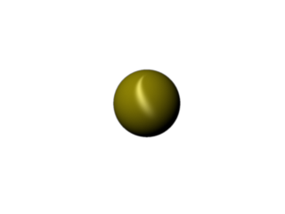
Surface Shader
A surface shader is the rawest form of material available. It does no internal calculations about light and only renders as the color for that location. This is useful for building shader networks for wierd effects like toon shaders. We will be revisiting this with our advanced shading lab.
Textures
(Source: Maya Help Guide)
Texture nodes are a type of render node that, when mapped to the material of an object, let you define how the objec's surface appears when rendered. There are two types of textures we care about for now: 2D and 3D.
2D textures wrap around an object, like gift wrapping, or stick to a flat surface, like wallpaper.
3D textures project through objects, like veins in marble or wood. With a 3D texture, objects appear to be carved out of a substance, such as rock or wood. You can scale, rotate and move 3D textures interactively in a scene view to achieve the desired results.
Setting up Rendering
Before we do any shading, we should first set up our renderer. We will go into more detail about rendering in a later lab, but for now just use the settings we describe below.
You can edit the render settings by clicking the film gate with radio buttons in the tool bar in the top of the screen or by selecting Windows > Rendering Editors > Render Globals.
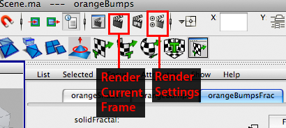
Select mental ray from the Render Using dropdown. There are a lot of settings, and again don't worry about it yet. For now, go to the Common tab and scroll down to Image Size. Since we have these awesomely powerful computers, lets render at half HD at 960x540. Change the width and the height box to 960 for the width and 540 for the height. The last thing to do is go to the Quality tab and change the Quality Presets to Production.
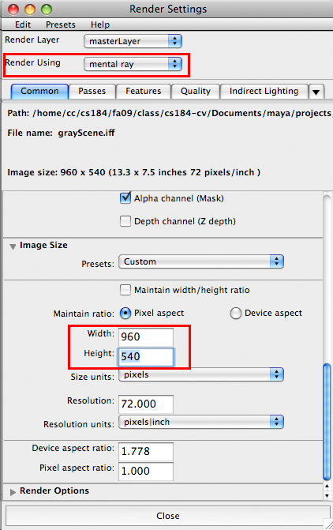 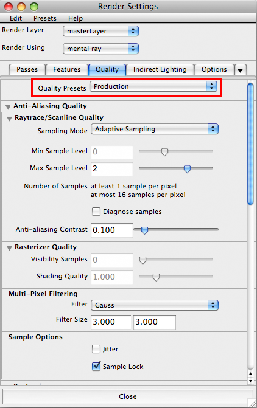
Now our renderer is set up so we can preview what will be the final product. We want to set this up since many things we do with the shader can't be seen without rendering (such as bump mapping).
Now whenever I ask you to render to check your progress, just hit the render current frame button at the top next to the render settings button.
Playing with Shaders
If you haven't already, download the initial boring, grey scene
Shading the Picture Frame
Select the picture frame and right-click. While holding down right-click, select "Assign new material" and select Lambert.
Your Attribute Editor should now be open with two tabs: lambertSG and lambert. Don't worry about the "lambertSG" tab for now: we will be doing all our work in lambert. It is a good habit to name your shaders so that when you have complex scenes, it's easy to know which shader you are looking at. I am renaming my shader "picFrame".
As you can see, right now the picture frame is a boring gray color. To change the color, double click on the color swatch in "Color". A color wheel should pop up and you can select the color for your picture frame. I'm going to pick a nice burnt orange color, but you can select whatever you'd like. Now you should see the picture frame turn burnt orange in your scene :D
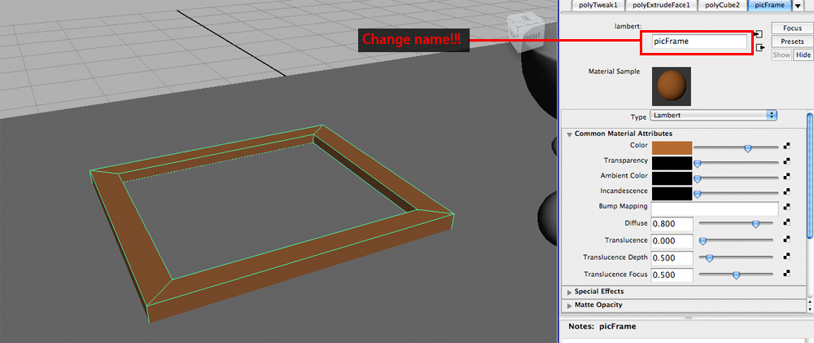
Yay! That already looks a lot better. I'm also going to shade the base of the picture frame brown. To reuse a material on another object, select the object, hold right-click, then "Assign Existing Material" which in this case is "picFrame". I'm going to leave the frame as it is, but you should play around with the other settings as well. Here is an overview of what each setting does:
| Option | Description |
|---|---|
| Color | Color changes the base color of the object |
| Transparency | Use this to adjust how opaque your object is. The further right the slider is, the more see-through it is |
| Ambient Color | Ambient color is a hack in 3D graphics. In real life when an object is hidden behind something else, say your legs under the desk, it doesn't completely disappear - you still can still see your legs. This is due to all the light rays in the room bouncing around and some light rays manage to bounce under the table. In 3D graphics, however, without the ambient term anything that doesn't have light hitting it directly would be completely black. Therefore, this ambient color is simply added onto your shader, regardless of lights, shadows, and other objects. |
| Incandescence | This term accounts for any emission of light an object may have. It is generally used to show a hot object. |
| Bump mapping | We will go over this in another example later in the lab |
| Diffuse | As explained previously, the diffuse term represents how well light spreads across the surface |
| Translucence | Translucence allows only light to pass through diffusely. A good example of this is a shower door |
Here are my final settings for the picture frame:
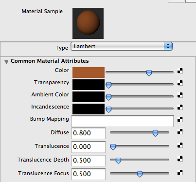
Final Render:
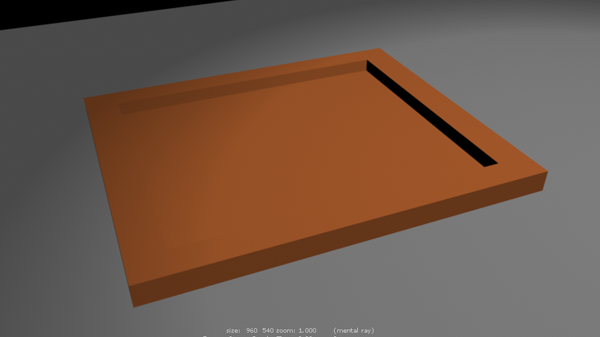
Whenever you are ready, we will start shading the bowl.
Shading the Bowl
Bowls are usually shiny and made of some kind of porcelain, plastic, or glass. Just to make it interesting, I will be making a glass bowl (but either way, we would use either a phong or blinn shader). Right-click on the bowl, select Assign New Material and select Phong.
Rename your shader to something like "bowlShader".
You probably noticed a lot of the material attributes for the phong shader are the same as for the lambert shader. Here is a brief overview of the new options available to you specific to phong shading (if I don't include it, you don't need to worry about it):
| Option | Description |
|---|---|
| Cosine Power | Controls the size of shiny highlights on the surface. The valid range is 2 to infinity. The slider range is 2 (broad highlight, not very shiny surface) to 100 (small highlight, very shiny surface), though you can type in a higher value. The default value is 20. |
| Specular Color | The color of shiny highlights on the surface. A black Specular Color produces no surface highlights. The default color value is 0.5. |
| Reflectivity | Gives the surface the ability to reflect its surroundings or the Reflected Color (similar to Specular Roll Off). The valid range is 0 to infinity. The slider range is 0 (no reflections) to 1 (clear reflections). The default value is 0.5. Reflectivity values for common surface materials are car paint (0.4), glass (0.7), mirror (1), chrome (1). |
| Reflected Color | Represents the color of light reflected from the material |
I am creating a glass bowl so I am using these settings:
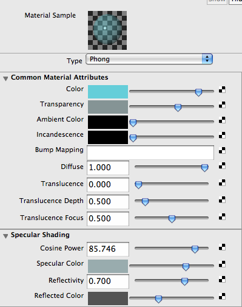
Final render:
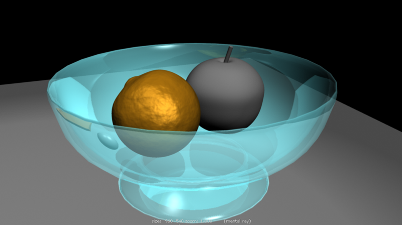
Shading the Lamp
So in general when I think of lamps, I think of a brushed aluminum metal for the shade. Do you remember what kind of shader is good for brushed aluminum? Anisotropic!
Let's assign a new shader for the lamp. Select the shade of the lamp, right-click, Assign New Material, then select "Anisotropic". Rename the shader to "lamp", and select a color like we did for the picture frame above. Keep in mind as you select your colors and settings what brushed aluminum looks like in real life. With shading, it's often easy to tell when something looks wrong.
Here is a brief overview of the new options available to you specific to anisotropic shading (if I don't include it, you don't need to worry about it)
| Option | Description |
|---|---|
| Angle | Determines the angle of the grooves in the object |
| Spread X/Y | Determines how much the grooves spread out in the X and Y directions |
| Roughness | Determines the overall roughness of the surface. The range is 0.01 to 1.0. Smaller values correspond to smoother surfaces and the specular highlights are more concentrated. |
| Specular Color | The color of shiny highlights on the surface. A black Specular Color produces no surface highlights. If you would like a more metallic looking object, the specular color should be similar to the base color. If you want a more plastic looking object, you would use white for the object. |
| Reflectivity | Gives the surface the ability to reflect its surroundings or the Reflected Color (similar to Specular Roll Off). the valid range is 0 to infinity. The slider range is 0 (no reflections) to 1 (clear reflections). |
| Reflected Color | Represents the color of light reflected from the material |
For now I am using the following settings:
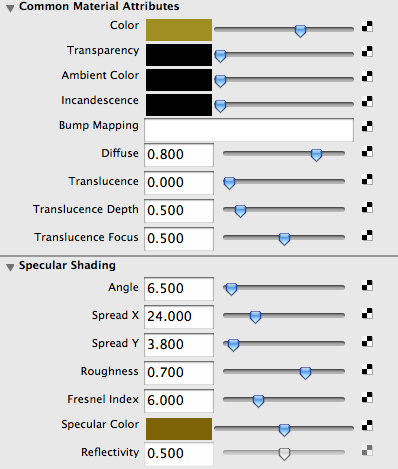
Final Render:
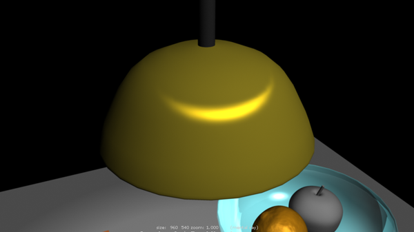
I'm going to also add a new Lambert shader to the wire that the lamp is hanging from. If you need to remember how to do that, scroll up to the picture frame section of the lab.
Shading the Orange
We've been ignoring that "bump mapping" node in all of our shaders so far and we are now going to finally use it on the orange! Bump mapping gives the illusion of surface detail without actually altering the surface itself.
Let's apply a waxy surface to our orange. Knowing everything we've learned so far, try creating a waxy surface on your own (without bump mapping). If you can't figure it out, look at my settings below.
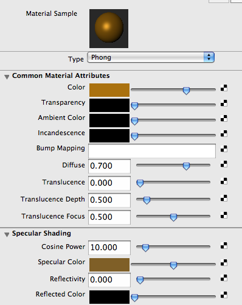
Now we're going to add the bump map to the orange. We will do this by adding a 3D Texture to the surface of the orange. To do this, select the checker board button on the right side of "Bump Mapping". Scroll down to the 3D Textures portion and select Solid Fractal.
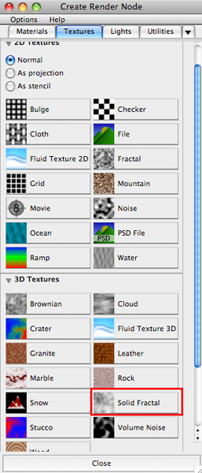
You will have new things now in your attribute editor. Change the names of the bump map to something useful. For now don't change the settings and render your orange.
Woah! That looks really funky and wrong. As you can see, however, that the appearance of the orange has completely changed and has the appearance of having a lot of ridges when they actually don't exist.
Now let's change a few more settings to make it look much more like a yummy orange.
Here are the important nodes:
| Option | Description |
|---|---|
| Ratio | Controls the frequency of the fractal noise. The range is 0 (low frequency) to 1 (high frequency). The default is 0.707. |
| Frequency ratio | Determines the relative spacial scale of noise frequencies. If not a whole number, the fractal does not repeat at the UV boundaries. For instance, a cylinder with default placement would display a seam. |
| Depth | The minimum and maximum number of iterations used to calculate the texture pattern. This parameter controls how fine grained the texture is. The range is 0 to 20 |
If you would like to read more about the other settings, read the Maya Help Guide.
I used the following settings to get my orange looking more.. orangey.
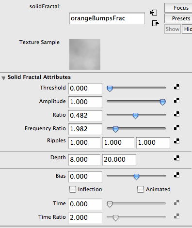
Final render:
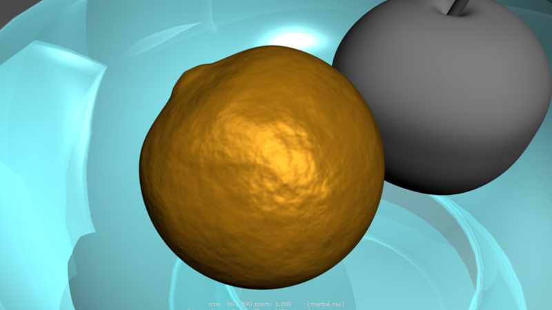
Hit render, and now you should see a nice looking orange.
Shading Onward!
Now that I've given you the basic tools, go and shade the rest of the scene however you like. Try using the wood 3D texture as a bump map for your table, and try placing a checkerboard texture on the chessboard (hint: instead of using a Color, click on the checkerboard button next to Color and add a 2D Texture from a File). Also remember to color the apple.
Here is my final render:
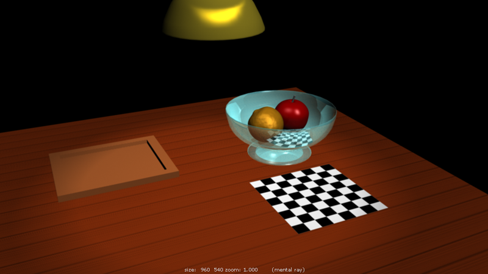
We still have one more shading lab ahead to cover more advanced topics such as creating your own 2D textures and using Maya's Hypershade, but for now this should give you a good idea of what shading can do.